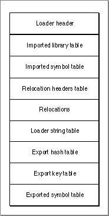

The Loader Section
The loader section is a special section that contains information used by the Code Fragment Manager to prepare the fragment. It contains information about the symbols imported to, and exported from, the fragment as well as instructions that tell the Code Fragment Manager how to fix up references to symbols.The general layout and content of the loader section appears in Figure 8-6.

The contents of the loader section are as follows:
The sections that follow describe these components in more detail.
- The loader header contains information about the location of other components of the loader section.
- The import information (library descriptions and symbol tables) describes the imports for the container.
- The relocation headers table provides information about relocations to be applied to a given section.
- The relocations area contains relocation instructions that describe how to fix up references to symbols within each section.
- The loader string table contains the names of the container's imported and exported symbols.
- The export information is contained in a hashed data structure, which has three parts:
- The export hash table, which contains hash chain information (the number of elements in the chain and the location of the first element) for each index value in the table.
- The export key table, which contains the hash values of the exports.
- The exported symbol table, which contains additional information about the exported symbols.
All tables use zero-based indexes. It is recommended that offset values for elements with no entries be set to
0.
Subtopics
- The Loader Header
- Imported Libraries and Symbols
- Relocations
- The Loader String Table
- Exported Symbols